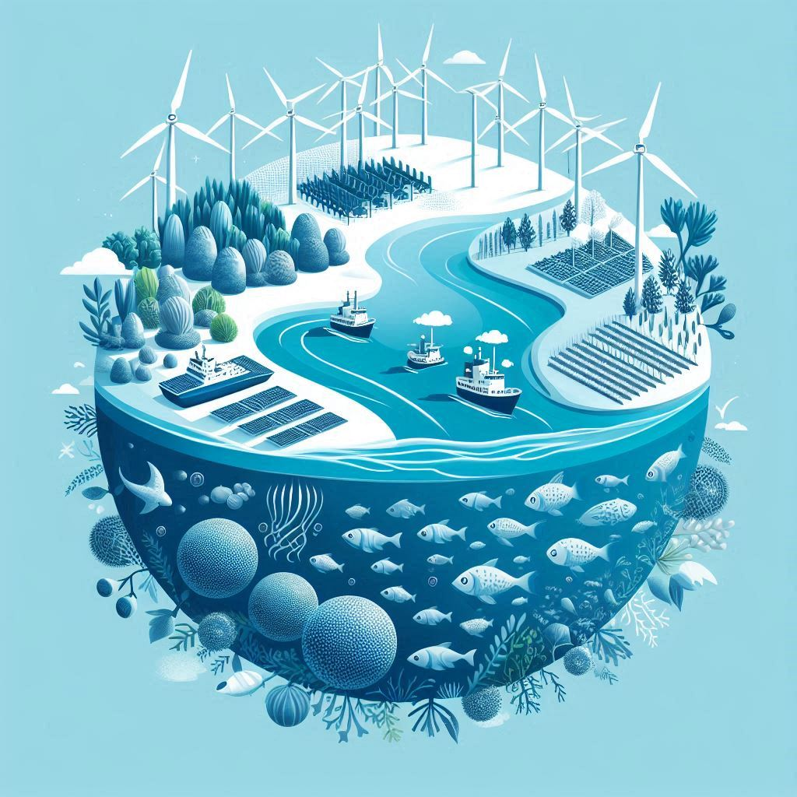

O que é a economia azul?
A economia azul é um conceito emergente que busca promover o desenvolvimento econômico sustentável através do uso responsável dos recursos oceânicos e aquáticos. Inspirada pela "economia verde", que se concentra em práticas ambientais sustentáveis, a economia azul vai além, enfocando especificamente os mares, oceanos, rios e lagos como fontes de crescimento econômico, preservação ambiental e melhoria do bem-estar humano.
Segundo a ONU, a economia azul é uma oportunidade para os países desenvolverem suas economias de forma sustentável, criando empregos, gerando renda e promovendo a inovação. A economia azul abrange uma ampla gama de setores, incluindo pesca, aquicultura, turismo, transporte marítimo, energia renovável, biotecnologia marinha, entre outros.
Principios da Economia Azul
Os princípios da economia azul são baseados em uma abordagem holística e integrada para o desenvolvimento sustentável. Alguns dos princípios-chave incluem:
- Sustentabilidade Ambiental: A exploração dos recursos aquáticos deve ser realizada de maneira que não comprometa a saúde dos ecossistemas marinhos e aquáticos. Isso inclui a proteção da biodiversidade, a redução da poluição e a gestão sustentável das pescas.
- Inovação e Tecnologia: Promover o desenvolvimento de novas tecnologias e práticas inovadoras que utilizem os recursos aquáticos de forma eficiente e responsável. Isso abrange desde a aquicultura sustentável até as energias renováveis, como a eólica e a marinha.
- Inclusão Social e Econômica: As tecnologia.html de economia azul devem beneficiar todas as partes interessadas, incluindo comunidades costeiras e ribeirinhas, garantindo que elas tenham acesso equitativo aos recursos e oportunidades geradas.
- Resiliência Climática: A economia azul deve contribuir para a adaptação e mitigação das mudanças climáticas, através de práticas que reduzam as emissões de carbono e aumentem a resiliência dos ecossistemas aquáticos às mudanças ambientais
- Proteção dos Direitos dos Trabalhadores: As práticas de economia azul devem assegurar condições de trabalho justas e seguras para todos os trabalhadores envolvidos nos setores relacionados, promovendo direitos laborais e a justiça social.
Áreas de foco
A economia azul abrange uma ampla gama de setores e atividades que utilizam os recursos aquáticos de forma sustentável. Alguns dos principais setores de foco incluem:
- Pesca e Aquicultura: A pesca e a aquicultura sustentáveis são fundamentais para a economia azul, fornecendo uma fonte de proteína saudável e acessível para as populações locais e globais.
- Turismo Costeiro e Marítimo: Promoção de práticas de turismo sustentável que valorizem e protejam os ecossistemas marinhos, ao mesmo tempo em que geram emprego e renda para as comunidades locais.
- Energia Renovável: A energia renovável, como a eólica e a marinha, desempenha um papel crucial na economia azul, fornecendo uma fonte de energia limpa e sustentável para as comunidades costeiras e ribeirinhas.
- Biotecnologia Marinha: A biotecnologia marinha é uma área emergente que utiliza os recursos aquáticos para desenvolver novos produtos, como medicamentos, alimentos e materiais inovadores e tecnologias, promovendo a inovação e a competitividade.
- Transporte Marítimo: O transporte marítimo é essencial para o comércio global e a conectividade entre os países, desempenhando um papel fundamental na economia azul.
Benefícios
A economia azul oferece uma série de benefícios para os países e comunidades que adotam práticas sustentáveis de uso dos recursos aquáticos. Alguns dos principais benefícios incluem:
- Crescimento Econômico: A economia azul pode impulsionar o crescimento econômico, criando empregos, gerando renda e promovendo o desenvolvimento de novos setores e indústrias.
- Segurança Alimentar: A pesca e a aquicultura sustentáveis podem contribuir para a segurança alimentar, fornecendo uma fonte de proteína saudável e acessível para as populações locais e globais.
- Conservação Ambiental: A economia azul promove a conservação dos ecossistemas aquáticos, protegendo a biodiversidade marinha e aquática e preservando os recursos naturais para as gerações futuras.
- Resiliência Climática: As práticas de economia azul podem ajudar a aumentar a resiliência dos ecossistemas aquáticos às mudanças climáticas, contribuindo para a adaptação e mitigação dos impactos ambientais.
- Inovação e Tecnologia: A economia azul promove o desenvolvimento de novas tecnologias e práticas inovadoras que utilizam os recursos aquáticos de forma eficiente e responsável, impulsionando a inovação e a competitividade.
- Bem-estar Social: Melhoria da qualidade de vida das comunidades costeiras e ribeirinhas através do acesso a recursos e oportunidades econômicas sustentáveis.
Desafios
Apesar dos benefícios potenciais, a economia azul enfrenta uma série de desafios que precisam ser superados para garantir o desenvolvimento sustentável dos recursos aquáticos. Alguns dos principais desafios incluem:
- Sobrepesca: A pesca excessiva e a sobrepesca são uma ameaça para a saúde dos ecossistemas marinhos e aquáticos, comprometendo a sustentabilidade dos recursos pesqueiros e a segurança alimentar das populações locais e globais.
- Poluição Marinha: A poluição marinha, causada por resíduos plásticos, produtos químicos tóxicos e poluentes industriais, representa uma ameaça para a biodiversidade marinha e aquática, comprometendo a saúde dos ecossistemas e a qualidade da água.
- Mudanças Climáticas: As mudanças climáticas, incluindo o aumento da temperatura da água do mar, a acidificação dos oceanos e o aumento do nível do mar, representam uma ameaça para os ecossistemas aquáticos e as comunidades costeiras, exigindo ações urgentes para mitigar e adaptar-se aos impactos ambientais.
- Conflitos de Uso: Os conflitos de uso dos recursos aquáticos, incluindo a competição por espaço e recursos entre diferentes setores e atividades, podem dificultar a implementação de práticas sustentáveis de economia azul e a gestão integrada dos ecossistemas aquáticos.
- Desigualdade Social: A desigualdade social e econômica, incluindo a exclusão de comunidades costeiras e ribeirinhas das oportunidades econômicas geradas pela economia azul, pode comprometer a sustentabilidade e a equidade do desenvolvimento dos recursos aquáticos.
A economia azul representa uma abordagem transformadora para o desenvolvimento sustentável, integrando a proteção dos recursos aquáticos com o crescimento econômico e o bem-estar social. Ao adotar práticas inovadoras e sustentáveis, podemos garantir que os oceanos e corpos d'água continuem a ser fontes de vida, alimento e prosperidade para as gerações futuras.
Na Bluemy, estamos totalmente alinhados com os princípios da economia azul. Nossa tecnologia de inteligência artificial para otimização da alimentação de peixes na aquicultura é um exemplo claro de como inovação e sustentabilidade podem andar de mãos dadas. Acreditamos que, através da aplicação de soluções tecnológicas avançadas, podemos minimizar o impacto ambiental da aquicultura, melhorar a saúde dos ecossistemas marinhos e contribuir para um futuro mais sustentável equilibrado.
Explore mais sobre a economia azul e descubra como a Bluemy está buscando a transformação para um Futuro Azul!